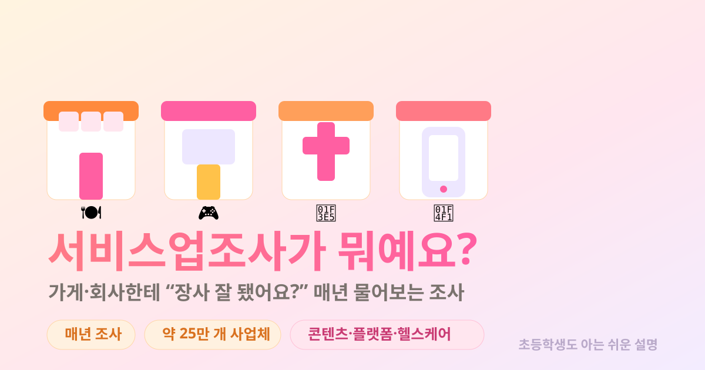

초등학생도 알 수 있게, 그림으로 천천히 설명할게요.
세상에는 물건을 만드는 공장도 있지만, 식당·미용실·학원·병원·게임회사처럼 서비스를 파는 곳이 훨씬 많아요.
이렇게 “서비스 가게·회사들이 1년 동안 얼마나 벌었는지”를 나라 전체에 대해 모아 놓은 것이 서비스업조사예요. 우리나라에서는 통계청(지금은 국가데이터처)이 해요.
번 돈에서 쓴 돈을 빼면, 그 가게가 새로 만든 돈(부가가치)도 알 수 있어요. 바로 이 “새로 만든 돈”이 우리 연구가 찾는 보물이에요. 💎
서비스라면 거의 다 물어봐요! 크게 11가지 종류의 가게·회사예요.
전국에서 무려 약 25만 개 가게·회사한테 물어봐요. 그리고 아주 잘게 쪼개서 봐요 — 게임 회사와 영화 회사를 따로, 한식당과 카페를 따로 셀 수 있을 만큼요. 🧱
큰 가게는 빠짐없이 전부 작은 가게는 일부만 뽑아서 (종사자 50명 또는 매출 100억이 그 기준선이에요.)
좋은 소식! 매년 물어봐요. 그래서 빠르게 따라갈 수 있어요.
발표는 한 해쯤 뒤에 나와요. 작년에 장사한 걸 모아서 올해 알려주는, “작년 장사 결산” 같은 거예요. 📸 (산업연관표가 4년 늦는 것보단 훨씬 빨라요!)
둘은 짝꿍이에요. 한 명은 공장 담당, 한 명은 가게 담당!
물건을 만드는 공장을 물어봐요. (반도체·자동차·전지 공장 등)
서비스를 파는 가게·회사를 물어봐요. (게임·영화·병원·학원 등)
이 둘을 합쳐야 나라 경제가 빠짐없이 보여요. 공장만 봐도, 가게만 봐도 반쪽이거든요. 🧩
우리 연구는 새로 뜨는 산업의 미래 부가가치도 전망해요. 그런데 새 산업은 두 종류로 나뉘어요.
🎮 게임 회사는 공장이 없지만 분명히 큰 산업이에요. 서비스업조사가 그 회사들의 매출과 사람 수를 세어 주니까, “공장에 안 잡히는” 새 산업도 숫자로 만들 수 있어요.
다만 솔직한 숙제 하나! AI·디지털플랫폼은 아직 딱 떨어지는 칸이 없어서 여러 가게 종류에 흩어져 있어요. 그래서 이 부분은 따로 모아 정의해 주는 추가 작업이 필요해요. 🔧